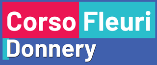

Du jeu console en C à l'application web complète — mes réalisations classées par importance.
Les projets les plus complets, démontrant mes compétences en architecture et développement full-stack.
Application web de prise de commande style McDo pour un restaurant — gestion des menus, produits et commandes avec impression de tickets thermiques en back-office. Réalisé en équipe de 4 dans un contexte professionnel.

Projets réalisés pendant ma formation, pour apprendre et consolider mes bases.
Application de partage de photos inspirée de Snapchat — posts, consultation des snaps et interactions. Développée en JavaScript avec une base de données MySQL.
Application web de gestion d'une ligue e-sport : équipes, joueurs, matchs et performances. Architecture MVC avec routeur custom en PHP 8.
Mes premiers projets en langage C : Numéro Magique, Tic Tac Toe et Sokoban. Logique de programmation, structures de données et algorithmique bas niveau.
Projets réalisés dans un contexte professionnel, en stage ou en alternance.
Projets actuellement en conception ou en cours de développement.
Application dédiée à la communauté des motards — roadtrips, bons plans, spots de ride et rencontres entre riders.
ProchainementComparateur de véhicules basé sur les stats du jeu The Crew Motorfest — vitesse, accélération, grip et maniabilité mis en regard pour aider les joueurs à choisir leur voiture.
Prochainement